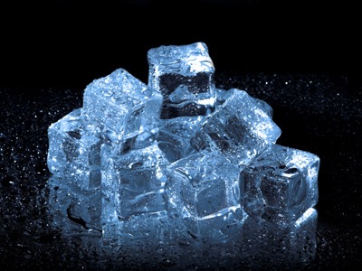
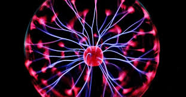

Solids
- Particles are closely packed in a fixed, regular arrangement.
- Strong intermolecular forces hold them together.
- Particles vibrate in place but do not move freely.
- Solids have a fixed shape and fixed volume.
- Incompressible due to minimal space between particles. 
Liquids
- Particles are close together, but not in fixed positions.
- Weaker intermolecular forces than solids.
- Particles can slide past each other, allowing the liquid to flow.
- Liquids have a fixed volume but no fixed shape — they take the shape of their container.
- Slightly compressible, but not easily.

Gases
- Particles are far apart and move freely and randomly.
- Very weak or negligible intermolecular forces.
- Gases have no fixed shape and no fixed volume — they fill any container.
- Highly compressible because of large spaces between particles.
- Exhibit diffusion and expansion rapidly. 
Plasma
- Consists of ionized particles — a mix of positive ions and free electrons.
- Forms at extremely high temperatures or under strong electromagnetic fields.
- Commonly found in stars, lightning, and neon signs.
- Conducts electricity and responds to magnetic fields.
- No fixed shape or volume — behaves similarly to gases but with charged particles.
Written by Thenura Dilruk